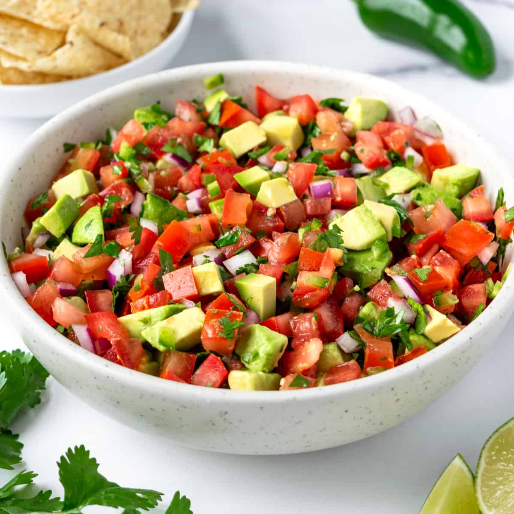

Pico de Gallo

Description
This classic and delicious Mexican recipe is easy to make and only needs a few ingredients.
Ingredients
- tomato
- onion
- cilantro
- jalapeño
- lime
Steps
- Use ripe red tomatoes.
- Chop your ingredients very finely.
- Let the onion, jalapeno, lime and salt marinate while you chop the tomatoes and cilantro.
- Let your pico rest for 15 minutes before serving.
- Serve with a slotted spoon.
Home